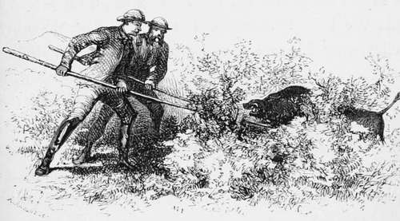

Chapter XV. Part 4
Description
This section is from the book "Hog Hunting In The East, And Other Sports", by J. T. Newall. Also available from Amazon: Hog Hunting in the East, and Other Sports.
Chapter XV. Part 4
The hunters kept watch and ward around, screened by such shelter in the shape of trees or bushes as presented itself.
For some time no deafening howl of extra power announced that the pig was viewed; but at last it came, and was kept up at intervals. It was reported that the boar had broken back past the men, and was trotting about sulkily from place to place as they followed him, but without any apparent intention of quitting his place of refuge. Suddenly there arose a tremendous uproar. Several men came darting out of the canes, and one was soon after led out by his comrades. He had got separated, and, coming across the path of the boar, was instantly charged and ripped.
He was brought to the sahibs, who ordered all the men to be withdrawn an order hardly necessary, as the men had withdrawn themselves and a°;ain set watchers round the field. Fortunately the man's hurts did not prove very serious. But the danger was too great to run the risk of any further casualties, so some other means were sought to dislodge or slay the surly old boar.
The wounded man proved to be one of the impressed buneeas, and he was evidently in a great fright that he had received his death wound. Being told, however, that he was not going to die this time, and further consoled by the promise of rupees, and a fine doctor's plaster to heal the wound when the hunters returned to their camp, he revived considerably. After having his wounds bound, and being dismissed to his home in charge of some others of the party, who swore they were his relatives, he limped along, hanging to the arms of his companions, pretending to be very bad, but the cuts were neither very deep, nor dangerously situated.
A consultation was now held regarding the best method of proceeding. It was evidently as useless as dangerous to expose the men any further, even could they be induced again to enter the field, a circumstance most improbable.
Melton, who was very sanguinary, and singularly deficient in those troublesome articles which among ordinary people pass by the name of nerves, proposed that they should go in on foot and attack the boar with their spears. In this he .was partially supported by Mowbray. The rest, however, did not appear to receive the proposition quite so readily, or with any marked favour. Not unnaturally, they considered that tackling a savage old boar with spears in thick cane, where it would be most difficult, if not impossible, to use them, was a course of action not to be lightly undertaken, or until all other means to dislodge the pig had been exhausted. Melton admitted this, and Mowbray now suggested that before acting on the proposed plan — only to be adopted as a dernier ressort — they should send for all of their guns and rifles, and by a continuous fusilade of blank powder endeavour to oust the animal from his quarters.
This was assented to, and men were dispatched to the tents to bring the materials, while the hunters adjourned to a neighbouring well and refreshed themselves, leaving the pig to his rest and to acquire the calm confidence of security before his stronghold was again -assaulted.
In less than an hour the guns were brought and the preparations made to renew the fight.
The fowling-pieces and rifles were given into the hands of Natta and the other shikarees, who had some knowledge of the use of arms, and would reload under the instructions of the old man or his son. To accompany the small band of gunners, he selected a few of the most forward of the other men, and these were armed with spare spears, bludgeons, and one or two swords. Thus formed, the whole band, under the personal command of Natta, once more invaded the field in as compact a body as the canes would permit.
A continuous fire was now kept up, accompanied by a sustained roar from the rest of the men, who took up a cautious position in a body outside. The progress of the attacking party could be easily discerned by the puffs of smoke which rose from the canes, and distinctly marked their advance. Suddenly the file firing was changed to a volley. This was shortly followed by the boar once more showing his grizzled front in the open, to the great delight of the hunters. Aroused from the peaceful repose which had followed his previous exertions by the gun-fire, so strange to his unaccustomed ears, he considered that the place was becoming too hot, and evacuated it.
There were numerous strips and patches of thick jungle in pretty close proximity, and for one of these he made, reaching it before the hunters could overhaul him. He was evidently now somewhat more distrustful of his speed than when he started with his morning freshness upon him, and in the lusty, full, confiding pride of one who had hitherto been unpursued.
He was hustled, however, from this patch after lingering in it for some time, but made good another, still unspeared, though he was very nearly run into by Mowbray and Danvers. It was manifest that he had but little go left in him, and would probably dodge backwards and forwards, from clump to clump, till some one of the hunters found an opportunity of intercepting him. Running one into the other as the strips of j ungle did, however, he had many advantages. Hitherto he had shown little pluck, or desire to face his persistent followers; but from the " coign of vantage " now attained, seemed inclined to change his tactics and make a running fight of it.
Quite unexpectedly lie took it into his head to charge, and came out at Stewart, who was cantering round with horse well in hand. How the horse escaped it was difficult to say, for the rider missed the boar, but managed to get out of the way unhurt, and the pig slipped into another bit of jungle. Thence again he charged, and at the same horseman, who, impeded by the bushes, once more missed. But this time the horse did not altogether escape. A gash across the thigh showed where the tusk had taken effect, However, it was not so bad as to place the horse hors dc combat. Getting away close behind the tired pig as he made across a small piece of open,
Stewart ran up and speared it without a turn. Mowbray next went past at speed, drove his spear clear through the pig, and left it standing in his body. After another slight dig from Melton, the' bullied creature shut up in a small patch of bushes, and no persuasions could induce him to leave it and show further fight.
This was an opportunity not to be lost by the sanguinary Melton, who dismounted, and twisting his bridle round a bush, prepared on foot to assail the wounded foe in his sanctuary. In this he was imitated by Mowbray, who had got hold of a fresh spear, and the two advanced together to the attack. Seeing them approach, the pig rose. But whether from being too severely wounded, or from lack of pluck probably the former he neglected to charge home in time, and receiving the thrusts with a grunt, followed it up by a shrill squeak, in which last despairing effort of the lungs his life passed away.
Attack on foot.
On examination, his tusks proved to be very much blunted, which might perhaps account for the comparatively slight nature of the wounds inflicted on man and horse during; the encounter.
There was much rejoicing among the cultivators at the death of their enemy, whose daily consumption of sugar-cane must have been pretty extensive. Several of them, who had collected on hearing of the satisfactory result of the prolonged engagement, assailed the dead body with the vilest terms of an exceedingly vile vocabulary of abuse, and appeared considerably relieved by this safe manifestation of their hatred.
Natta varied a few terms of disparagement with some in praise of what he was pleased to call the animal's beauty. The latter consisted partly in its fine exhibition of tusk, but principally in the layers of fat with which it was well covered, and its otherwise satisfactory condition from a feeding point of view.
The gralloching effected, the body was slung on poles and dispatched to camp, while the hunters prepared to go in search of another pig, which Natta considered might be found. He had come on its traces in the morning, but had left the pug in order to mark down the larger hog just killed.
They were not long in striking the trail, and followed it for some time over a varied country towards the hills. But it was eventually thrown up, as it led right into the stoniest part of them, where further pugging was most difficult, and at that late hour would probably prove fruitless.
Continue to:
- prev: Chapter XV. Part 3
- Table of Contents
- next: Chapter XVI